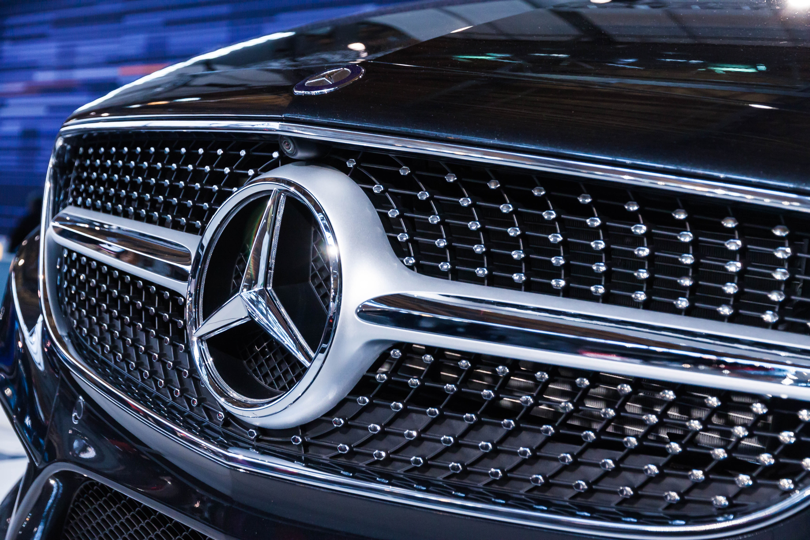

TecnoAuto Costa Rica
TecnoAuto Costa Rica
TecnoAuto Costa Rica
TecnoAuto Costa Rica
on la invención del automóvil, Gottlieb Daimler y Karl Benz ponen la primera piedra del tráfico motorizado individual. Ambos integran sus trabajos en empresas propias: en octubre de 1883 Benz funda en Mannheim Benz&Co. y en noviembre de 1890 surge en Cannstatt Daimler-Motoren-Gesellschaft (DMG). Emil Jellinek, hombre de negocios apasionado del progreso y del automóvil, está convencido de que el coche revolucionará el futuro. En 1889, y con la construcción del coche de ruedas de acero con propulsor de dos cilindros en V, Daimler y Maybach dan un gran paso adelante en lo que toca a la evolución técnica.
| Posición | Modelo |
|---|---|
| 1 | Mercedes Clace A |
| 2 | Mercedes GLA | 3 | Mercedes CLA |
| 4 | Mercedes AMC | 5 | Mercedes Clace-C |